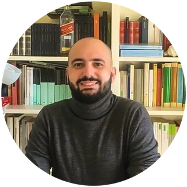

Danilo Aprigliano
Docente · public historian · filologo · sviluppatore
Insegno lettere a Milano, studio la Resistenza e formo i docenti all’uso dell’intelligenza artificiale. Qui sotto, le strade per arrivare a quello che scrivo e faccio.
«Il punto cieco»La newsletter · iscriviti→In evidenzascelti da me
“Nessuno dice «emergenza boomer»: come la «Gen Z» è diventata una categoria penale”nuovo«Gli Stati Generali», 24 ottobre 2026.→
“«Aboliamo la maturità» – anatomia di una polemica stagionale”«Il punto cieco», 21 giugno 2026.→
“L’impero dei significati”Racconto, «Nazione indiana», 3 marzo 2023.→
Gli ultimi pezzidovunque escano
1“La malattia infantile del centro”«Il punto cieco», 24 luglio 2026.→
2“La scuola non è un unicorno”«Il punto cieco», 5 luglio 2026.→
3“Spegnere la notte”«Il punto cieco», 14 giugno 2026.→
Tutti gli articoli, dal 2012 →
Il sitole pagine
4IA a scuolaIl percorso di formazione per i docenti, com’era fatto e con i numeri.→
5Public historyI quindici martiri di Piazzale Loreto, le mostre della Fondazione Feltrinelli, le Fiamme Verdi.→
6ScritturaLibri, saggi e ricerca; le puntate per Gli Ascoltabili; la newsletter.→
7WebSiti e applicazioni per archivi, associazioni e riviste.→
8Impegno civileIl Circolo e Centro studi «Emilio Caldara», la FIVL, «Hey Milano».→
9Lezioni privateLatino, italiano, storia e metodo di studio.→
10Materiali didatticiSchede, dispense e verifiche, libere da scaricare.→
11CurriculumPer esteso, numerato e con le date, con il PDF.→
12TuttoOgni cosa fatta, in un elenco solo, in ordine di data.→
Una pagina di daniloaprigliano.it, nello stesso foglio di stile. Nessuno script, nessun cookie, nessuna pubblicità. English